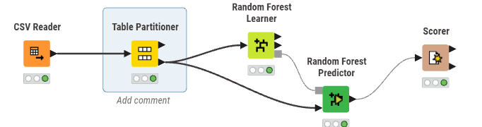
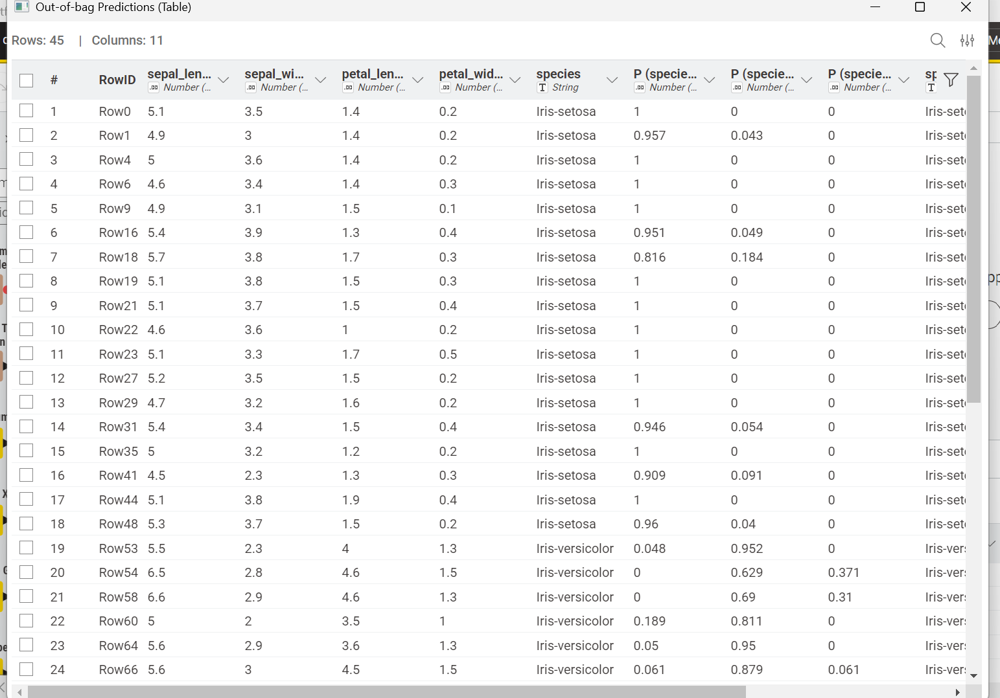
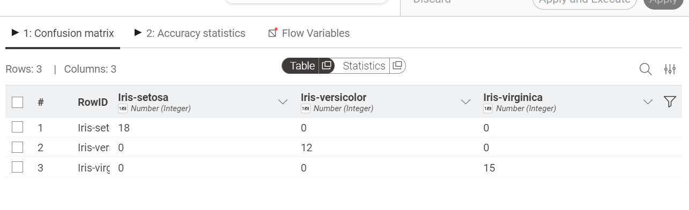

Laporan Proyek: Analisis Data Menggunakan Random Forest#
1. Pengertian Ensemble Learning#
Ensemble Learning adalah paradigma dalam machine learning di mana beberapa model (sering disebut sebagai “base learners”) dilatih untuk memecahkan masalah yang sama dan dikombinasikan untuk mendapatkan hasil prediksi yang lebih baik. Prinsip utamanya adalah “kekuatan dalam jumlah”; sekumpulan model lemah (weak learners) yang bekerja bersama seringkali dapat mengungguli satu model kuat (strong learner).
Dua teknik ensemble yang paling populer adalah:
Bagging (Bootstrap Aggregating): Melatih beberapa model secara paralel pada subset data yang berbeda. Contoh utamanya adalah Random Forest.
Boosting: Melatih model secara berurutan, di mana setiap model baru mencoba memperbaiki kesalahan model sebelumnya.
Mengapa Menggunakan Ensemble?#
Meningkatkan Akurasi: Menggabungkan prediksi mengurangi kemungkinan kesalahan tunggal.
Mengurangi Overfitting: Teknik seperti Bagging membantu menstabilkan model sehingga tidak terlalu sensitif terhadap noise pada data latihan.
Robustness: Model menjadi lebih tangguh terhadap variasi data.
2. Pengertian Random Forest#
Random Forest adalah algoritma pembelajaran mesin yang menggunakan teknik Bagging. Algoritma ini membangun banyak pohon keputusan (Decision Trees) secara independen. Saat melakukan prediksi, Random Forest akan mengambil hasil dari setiap pohon dan menentukan hasil akhir melalui voting (untuk klasifikasi) atau rata-rata (untuk regresi).
Dalam proyek ini, Random Forest digunakan untuk mengklasifikasikan dataset Iris. Model ini memecah data berdasarkan fitur sepal dan petal untuk menentukan spesies bunga dengan tingkat akurasi yang tinggi.
3. Konsep Dasar Random Forest#
Berbeda dengan Decision Tree tunggal yang mencari atribut terbaik di seluruh dataset, Random Forest:
Mengambil sampel acak dari data (Bootstrap).
Memilih subset fitur secara acak pada setiap percabangan pohon.
Menggabungkan hasil dari ratusan hingga ribuan pohon untuk mencapai keputusan final.
TUGAS#
Laporan Proyek: Klasifikasi Random Forest Menggunakan KNIME#
4. Deskripsi Proyek#
Proyek ini bertujuan untuk membangun model klasifikasi spesies bunga menggunakan algoritma Random Forest di platform KNIME.
Dataset: Iris Dataset
Kolom Target: species (Iris-setosa, Iris-versicolor, Iris-virginica)
Fitur: sepal_length, sepal_width, petal_length, petal_width.
5. Visualisasi Workflow#
Workflow ini mencakup perbandingan antara model Decision Tree dan Random Forest untuk melihat efektivitas masing-masing algoritma.

Langkah-Langkah Pembuatan Workflow#
6. Membaca Data (CSV Reader)#
Node: CSV Reader
Memasukkan file dataset Iris yang berisi data numerik dimensi bunga dan label spesies.
7. Membagi Data (Table Partitioner)#
Node: Table Partitioner
Membagi data menjadi data latih dan data uji. Berdasarkan konfigurasi, data latih yang digunakan sebanyak 105 baris untuk memastikan model memiliki cukup referensi pola.

8. Pelatihan Model (Random Forest Learner)#
Node: Random Forest Learner
Membangun “hutan” keputusan. Di sini, parameter seperti jumlah pohon dan kedalaman pohon ditentukan untuk mengoptimalkan klasifikasi spesies Iris.
9. Prediksi (Random Forest Predictor)#
Node: Random Forest Predictor
Menerapkan model hutan yang telah dilatih ke data sisa (data uji) untuk melihat seberapa baik model memprediksi spesies yang belum pernah dilihat sebelumnya.

10. Evaluasi (Scorer)#
Node: Scorer
Menampilkan Confusion Matrix. Hasil menunjukkan bahwa Random Forest berhasil memprediksi seluruh data uji dengan akurasi 100%, membedakan Setosa, Versicolor, dan Virginica tanpa kesalahan.

11. Kesimpulan#
Random Forest merupakan metode Ensemble Learning yang sangat kuat. Melalui proyek ini, terlihat bahwa dengan menggabungkan banyak pohon keputusan, variansi model berkurang dan akurasi meningkat. Visualisasi melalui KNIME memudahkan pemahaman alur data dari pembacaan hingga evaluasi hasil akhir yang menunjukkan performa sempurna pada dataset Iris.